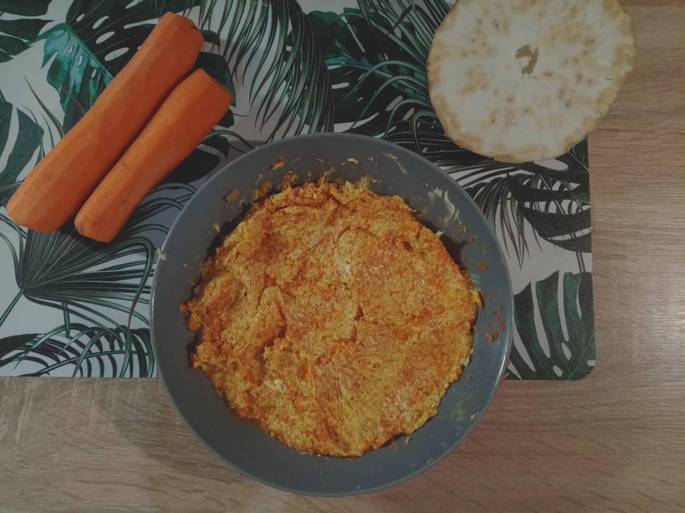

Zelerová nátierka podľa @vegmnamky_od_mamky — Normy Jedál
Mrkvovo-zelerová nátierka
Mrkva a zeler nastrúhaný na jemno, rastlinné maslo alebo cream cheese, sójová omáčka, soľ, tekuté korenie.
Nátierka chutí ako lososová, s tým rozdielom, že je čisto rastlinná a na domácom chlebíku naozaj úžasná. 🥰
#dnesjem #mrkvovanatierka #zelerovanatierka #vegetarian #slovakvegetarian #fit #healthy #zdravienaprvommieste #vegan #mnam